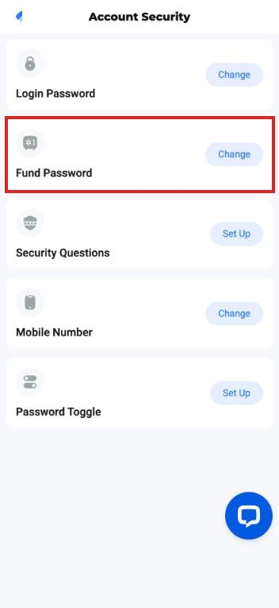
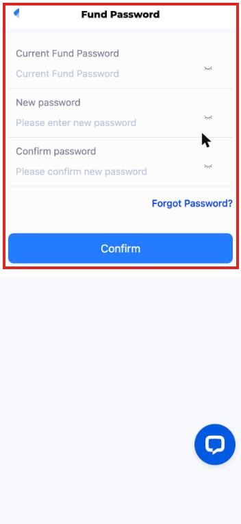
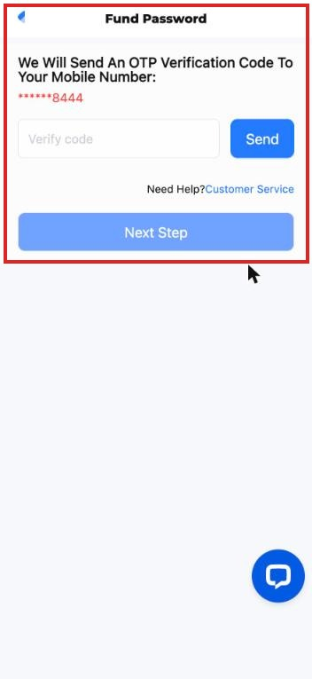
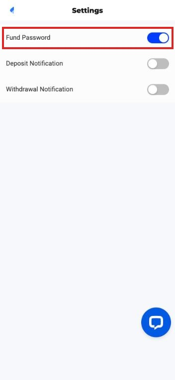

隐藏资金密码（Fund Password）· v1
2026-10-28 ｜ 前台 PC 版 + H5 ｜ 本次：隐藏；无新增、无修改
把前台「资金密码（Fund Password）」相关的画面与入口全部隐藏。共 4 个地方，PC 与 H5 各一套、位置相同；下方以 H5 截图示意，红框即为要隐藏的部分。
一、要隐藏的 4 个地方

1. Account Security 列表拿掉「Fund Password」这一列，其余列顺序不变。

2. 设定／修改资金密码整页（PC 为弹窗）不再出现，入口随第 1 点一起拿掉。

3. 忘记资金密码整页（PC 为弹窗）不再出现，入口随第 2 点一起拿掉。

4. Settings 开关只拿掉「Fund Password」这一行，下面两个通知开关保留。
PC 版画面与 H5 一一对应：PC 用弹窗、H5 用独立页，隐藏范围相同。
- 直接输入网址（如 /m/user/security/fund-password、/m/user/security/forgot-fund-password）也不可进入，显示既有 404「Page Not Found」页。
二、不受影响
- 提款：目前提款流程没有用到资金密码，不用改。
- Login Password、Security Questions、Mobile Number、Deposit／Withdrawal Notification：全部照旧。
三、提醒开发
- 删除提款账户时，前台会自动带一个固定值的资金密码给后端（使用者早已不用输入）。隐藏功能时请确认删除提款账户不受影响。